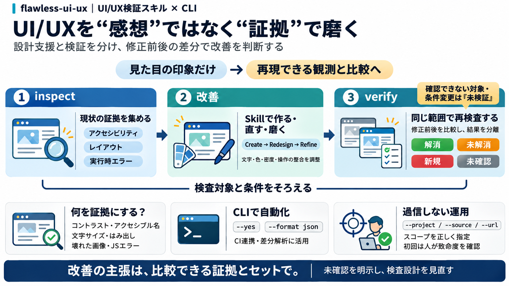

Fast and reliable end-to-end testing for modern web apps | Playwright
### Playwright CLI Token-efficient browser automation for coding agents like Claude Code and GitHub Copilot. Skill-base…

UI/UXを“証拠”で磨く
AIエージェントがUI/UXを 作る・作り直す・磨く だけでなく、 実装を inspect/verify で検査し、根拠ある比較として残すためのスキルとCLIです。
“それっぽい”を止めたい
UI/UX改善は、見た目の印象だけだと 再現性 と 検証可能性 が不足しがちです。 そこで「何が問題で、改善できたか」を比較可能にします。
inspect / verify
inspect は現状から証拠を集め、続く verify は同じスコープで再検査して差分として報告します。 「改善したか／未確認か」を切り分けるのが意図です。
作る → 直す → 磨く
Create/Redesign/Refine/Focus/Review の流れでUI改善を段階化し、 スキルがデザイン要素と実装品質を一緒に扱えるようにしています。
デザイン×実装
デザイン要素（composition/typography/color/density/imagery/interaction）を扱い、 破綻や実行時問題（壊れた画像・JSエラー等）まで品質の一部として検査します。
証拠の種類
例として、アクセシビリティ（axeルール）、文字サイズ・オーバーフロー、 壊れた画像/JSエラー、コピーテキスト反復などが挙げられています。
自動化できる
インストール/実行はワンコマンド中心で、対話の選択や --yes、 --format json による機械可読出力が明示されています。
範囲指定が命
--project、--source、--url のようなスコープ指定は、 検証対象のずれ＝“期待した確認ができない”を防ぐために重要です。
“差分で語る”
作成だけでなく、CLIが修正前後を比較して、永続的な指摘・新規指摘・解消した指摘を分離します。 その結果、「改善したと言い切れるか」が検証しやすくなります。
inspect ≠ verify
inspect は証拠を収集し、verify は修正後に再検査して比較します。 「未確認が残る」という扱いがあるため、ツール出力を過信せずスコープ設計を見直す契機になります。
過信は危険
README断片だけでは、閾値（合否基準）や比較アルゴリズムの厳密さ、axe設定の詳細、 フレームワーク前提などが十分に読み取れません。
結論
flawless-ui-uxは、UI/UX改善を 設計支援（skill） と 検証（CLI/inspect/verify） に分け、 アクセシビリティ・レイアウト破綻・実行時エラーを比較可能な証拠へ落とし込みます。
### Playwright CLI Token-efficient browser automation for coding agents like Claude Code and GitHub Copilot. Skill-base…
| | | | --- | | Hacker Newsnew | past | comments | <ask> | <show> | <jobs> | <submit> | login | | | | | --- …
overhaul-ui v1.0.0 An installable, multi-file frontend design skill for AI coding agents. Anti-slop design direction, t…
| Gate | Verdict on the left-hand page | --- | | REAL-render WCAG | `x"Analytics Dashboard" 1.00:1 (need 3)`: white tex…
The split is not typed here: `tests/meta/counts.test.mjs` derives it from which gates import Playwright and fails if thi…